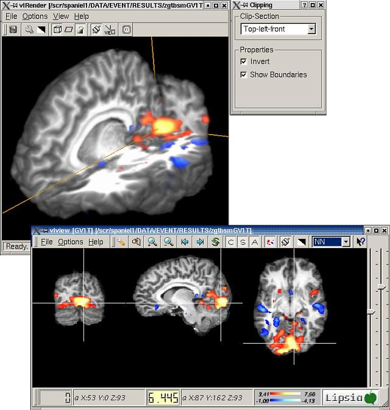

To resect parts of the current volume, either a clipping box or a clipping plane can be used.
To e.g. enable the clipping box, select the 'Clip-Box' entry from the 'Options'-Menu, click on the box icon at the toolbar or simply type 'B' on the keyboard.
The clipping box and an additional dialog to control clipping properties are displayed. The clipping box can be moved in x- and z-direction by keeping pressed the middle mouse-button and in y-direction by keeping pressed the right mouse-button while moving the mouse.

The behaviour and use of the clipping plane is similar to that of the clipping box described above, except that it can only be moved along the direction orthogonal to its orientation using the middle mouse-button.
Keep in mind: Either the clipping object or the volume is active for modification. To toggle the active object, simply press the space bar at the keyboard or select the icon showing a lock at the toolbar. The type of the currently active object is always shown at the lower right corner of the main window. To disable the current clipping object, click at the appropriate menu- or toolbar-item again.
The most convenient way to locate important regions within the volume is to control the clipping object by connecting 'vlrender' to 'vlview'.
After selecting 'Run vlview' from the 'Options' menu or clicking the vlview icon at the toolbar, 'vlview' is opened with the current data set.
The most convenient way to locate important regions within the volume is to control the clipping object by connecting 'vlrender' to 'vlview'. After selecting 'Run vlview' from the 'Options' menu or clicking the vlview icon at the toolbar, 'vlview' is opened with the current data set. Just by navigating through 'vlview', the 'vlrender' clipping object will follow vlview's current cursor position as long as both programs are connected. The connection is indicated by the potted connector icon at the toolbar of 'vlrender' and 'vlview'. (See 'Synchronize with Lipsia-Server' in the 'Options' menu or the connector icon at the toolbar.)
In addition, changing the zmap-thresholds in 'vlview' will cause 'vlrender' to do the same if both programs are connected.